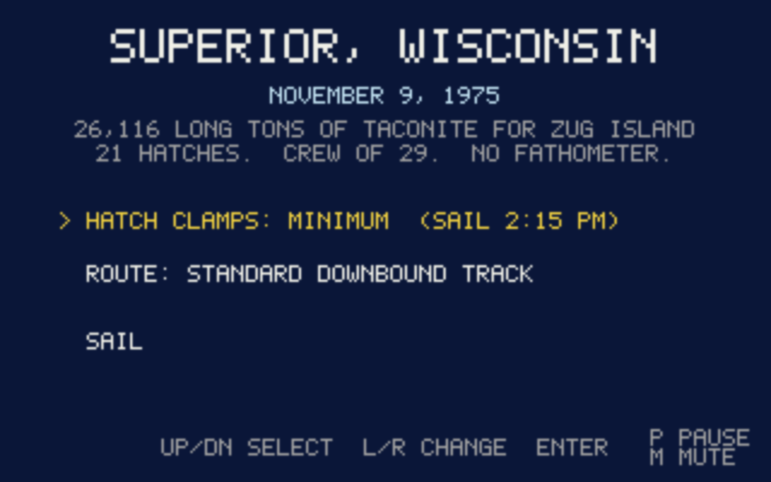
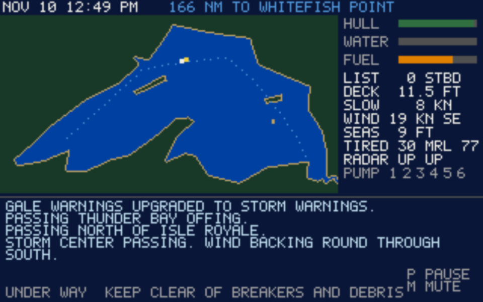
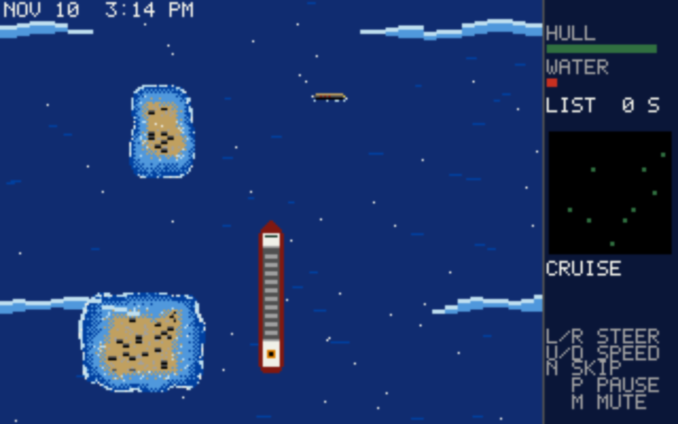
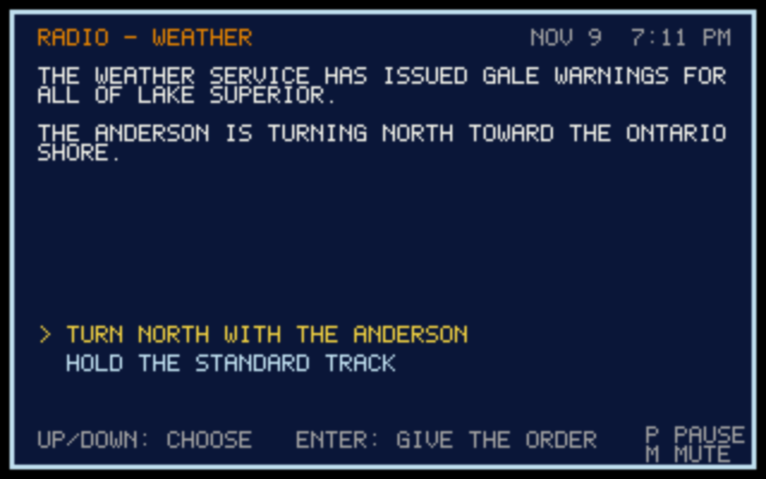

29 men. No bodies recovered. No distress call.
The SS Edmund Fitzgerald sank in a severe storm on November 10, 1975, about 17 miles from the entrance to Whitefish Bay. The cause is still unknown. This game is a memorial: it uses fictional crew names and roles, and it doesn't present any one theory as fact.
The voyage
A retro, Atari-style game in 320×200 and 16 colors. You command the ship from the dock at Superior, Wisconsin, as the storm builds on the historical clock. There is no score: only the ship, the weather and the decisions you make.
The chart
Give your speed and pump orders, then get under way. Radio traffic and events arrive at their real times, and what you decide stays with you.
The helm
Steer through top-down scrolling seas, finding the gaps in the waves and avoiding debris and shoals through wind and snow. Damage and water taken on stay with the ship.
From the game




What happened
| Nov 9, 2:15 p.m. | Departs Superior, Wisconsin, with 26,116 long tons of taconite pellets, bound for Zug Island near Detroit. |
|---|---|
| Nov 9, 7 p.m. | Gale warnings issued for all of Lake Superior. |
| Nov 10, 1 a.m. | The storm hits. |
| Nov 10, ~3:30 p.m. | Reports damage, water coming aboard and a list. |
| Nov 10, ~4:10 p.m. | Reports radar failure and asks the Arthur M. Anderson to track the ship. |
| Nov 10, 7:10 p.m. | Last radio contact. |
| Nov 10, ~7:20 p.m. | Gone from radar and radio. |
Controls
| Menus and text | Up/Down to choose, Space or Enter to confirm |
|---|---|
| Port | Left/Right changes a setting |
| Chart | Up/Down for speed, 1–6 for pumps, R to repair, Space or Enter to go |
| Helm | Left/Right or A/D to steer, Up/Down for speed |
Play it
Play in your browser on a computer with a keyboard. The download is large, so the first load takes a moment.
To build the desktop version from source on Linux, you need stable Rust. On Arch Linux, install the system dependencies, then run the game from the repository root:
sudo pacman -S --needed alsa-lib systemd-libs vulkan-icd-loader pkgconf
cargo run --releaseThe first build takes a while.